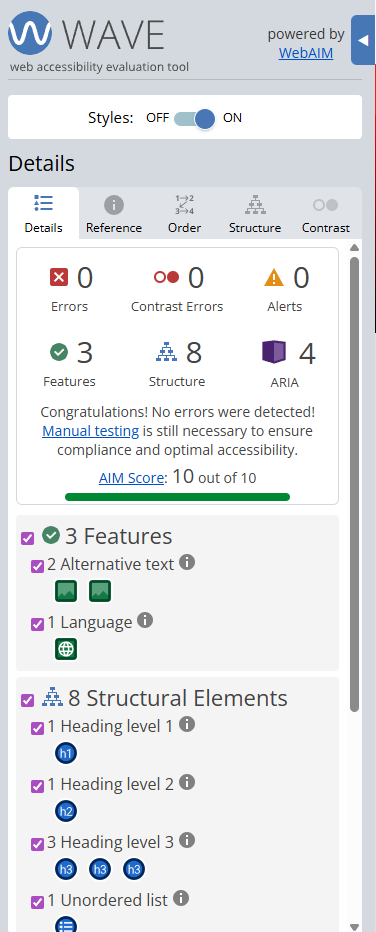

Contexte et Objectifs
Présentation générale
Réalisée au premier semestre au département Réseaux et Télécommunications de l'IUT de Caen, la SAÉ 1.02 propose une mise en situation complète pour concevoir et déployer un réseau local d'entreprise (LAN). Mené en équipes de quatre, le projet vise à bâtir une infrastructure stable, ségrisée et fonctionnelle en respectant un cahier des charges professionnel.
Architecture technique & manipulations
Le projet combinait l'interconnexion d'équipements Cisco physiques et le déploiement d'environnements virtualisés (Proxmox) pour héberger des services essentiels.
1. Configuration et ingénierie réseau
- Plan d'adressage IP : Conception et déploiement d'un plan IPv4 (adresses fixes et DHCP) adapté à la segmentation par VLAN.
- Matériel Cisco : Configuration CLI de commutateurs de niveau 2 (Cisco 2960), commutateur de niveau 3 (Cisco 3560) et routeur LAN/WAN (Cisco 2911).
- Protocoles : RSTP, EtherChannel, segmentation par VLAN (Data / Management) et routage inter-VLAN.
2. Sécurisation des commutateurs (Switch Hardening)
- Protection contre les tempêtes de diffusion : Mise en place de mécanismes limitant les broadcast storms.
- Prévention du MAC Flooding : Limitation et surveillance du remplissage de la table CAM.
- Sécurisation des ports d'accès : Politiques pour empêcher les connexions non autorisées (Port-Security, VLAN access control).
3. Déploiement système & services (Virtualisation)
- Infrastructure Proxmox : Installation d'une VM Debian (disques multiples, interfaces réseau) sur la baie de serveurs configurée en cluster.
- Services applicatifs : Déploiement et administration de serveur Web, FTP, TFTP et DNS cache.
- Accès sécurisés : Configuration SSH (authentification par mot de passe puis par clés asymétriques pour les accès critiques).
Organisation et livrables attendus
Travail collaboratif et documentation : rédaction de notices techniques partagées, respect des procédures d'exploitation (quorum cluster, extinction ordonnée) et évaluations de groupe complétées par des contrôles individuels (QCM).
Ressources et compétences mobilisées
Cette SAÉ mobilise plusieurs compétences du tronc commun :
- R1.07 : Fondamentaux de la programmation — automatisation et scripts d'assistance.
- R1.08 : Bases des systèmes d'exploitation — gestion des VM et fichiers de configuration.
- R1.11 : Expression & communication — rédaction professionnelle des rapports techniques.
Aperçu du travail effectué sur l'architecture réseau et la configuration.
Mise en place de la hiérarchie réseau avec un routeur de bordure et des switchs de distribution.
Router(config)# interface g0/0.10 Router(config-subif)# encapsulation dot1Q 10 Router(config-subif)# ip address 192.168.10.1 255.255.255.0 Router(config-subif)# no shutdown
Configuration du routage inter-VLAN (Router-on-a-stick).
Preuves des difficultés rencontrées
Documentation des audits et des vulnérabilités identifiées lors du CTF :

Situation : Analyse des risques et répartition des lots de l'infrastructure de Jean Boomer avant sécurisation.

Correction : Application des règles de durcissement de l'ANSSI sur la politique de mots de passe.
Analyse Réflexive
Problèmes rencontrés & Solutions
Lors de la configuration, j'ai rencontré un problème de connectivité entre deux VLANs différents. Après analyse des tables de routage, j'ai réalisé que l'encapsulation sur les sous-interfaces du routeur n'avait pas été correctement définie. Solution : J'ai vérifié la correspondance des IDs de VLAN entre le switch (trunk) et le routeur, ce qui a rétabli le trafic.
Apprentissages Critiques (AC) validés
Grâce à ce projet, j'ai pu démontrer les compétences du pôle RT3 (Développer) :
- ✅ AC11.01 : Savoir configurer les équipements de couche 2 et 3.
- ✅ AC11.05 : Capacité à questionner un cahier des charges technique.
Auto-évaluation
Je suis satisfait de la rigueur apportée au plan d'adressage. Cependant, je pense que j'aurais pu optimiser la sécurité en configurant le Port-Security sur les switchs d'accès dès le départ pour prévenir les intrusions physiques.